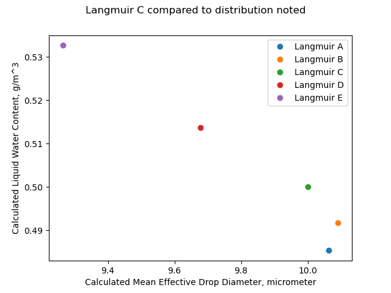
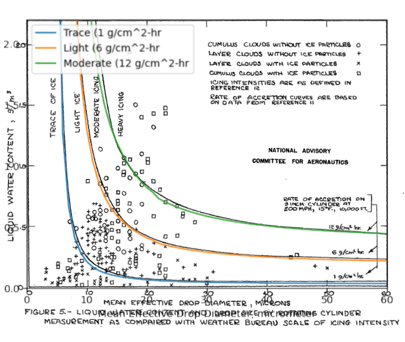
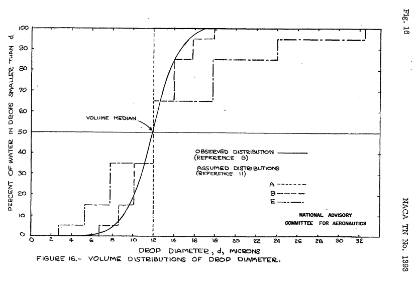

"The rotating-cylinder method of measuring liquid water content is generally regarded as being the most accurate and dependable procedure thus far developed"
“A Flight Investigation of the Meteorological Conditions Conducive to the Formation of Ice on Airplanes"
Summary
A multicylinder and other instruments measure natural icing conditions in flight.
Key points
- The accuracy of multicylinder instruments used to determine liquid water content and median water drop size is assessed.
- An icing intensity index as related to the ice growth rate on a 3 inch diameter cylinder is detailed.
- Results from agree well with the Python implementation of the cylinder analysis.
- "Tentative" values for icing design conditions were determined.
- An effect of distance on icing conditions is noted.
Abstract
Data from flight measurements of the meteorological factors related to the intensity of icing conditions are presented. The physical factors that establish the distribution of liquid water in clouds of various types are discussed and the results of the analysis aro used to formulate certain rules for the forecasting of icing intensity. The problems of determining the range of values of the significant factors defining icing intensity for the purpose of the design of ice-protection equipment are discussed, and tentative values are given.
Discussion
Multicylinder instruments
Multi-cylinder probes were used to determine water drop sizes, and, in some cases, drop size distributions.
A fixed cylinder was also used for an "area of catch" method of drop size determination.
The multicylinder method for liquid water content measurement is regarded as accurate:
The rotating-cylinder method of measuring liquid water content is generally regarded as being the most accurate and dependable procedure thus far developed. (Reference 8) 2
For the multicylinder calculations NACA-TN-1393 cites the methods of Langmuir and Blodgett 3.
An assessment of the accuracy of the rotating cylinder method is included:
The errors involved in calculating the liquid water content and mean-effective diameter from the two-cylinder-data have been estimated by considering the errors inherent in measuring the quantities-used in the calculations.. The results, which are shown in the following table, are based on a liquld water content of 0.5 gram per cubic meter and an average drop diameter of 10 microns.
| Resulting percent error (E) | Resulting percent error (E) | ||
|---|---|---|---|
| Source of error | estimated amount of error | Water content | Drop diameter |
| Weighing sample 1/8-in. cylinder | 0.02 gram | 2.6 | 2 |
| Weighing sample 1-in. cylinder | 0.03 gram | 1.0 | 1 |
| Assumed density of ice | 0.08 g/cm^3 | 2.5 | 2 |
| Timing exposure | 1.5 sec | 2.4 | 0 |
| True airspeed | 2.5 | 1.5 | 0 |
| Misculaneous errors | ---- | 1.0 | 1 |
| Error due to using "C" distribution for unknown distribution | ---- | up to 3 | up to 3 |
| Total error | Water content (percent) | Drop diameter (percent) |
|---|---|---|
| Maximum total error sum(E) | 14 | 9 |
| Estimated resultant error (sum(E^2))^0.5 | 5.7 | 4.4 |
Running the file "naca-tn-1393.py" 4 yields different results, particularly for the 'Error due to using "C" distribution curves for unknown distribution' part:
| Source of error | Estimated amount of error | Resultant percent error (E) Water content | Resultant percent error (E) Drop diameter |
|---|---|---|---|
| Weighing sample 1/8-in. cylinder | +/-0.02 gram | 2.9 | 2.6 |
| Weighing sample 1-in. cylinder | +/-0.03 gram | 0.3 | 1.1 |
| Assumed density of ice | -0.08 g/cm^3 | 0.4 | 0.3 |
| Timing exposure | +/-1.5 seconds | 2.6 | 0.0 |
| True airspeed | +/-2.5 mph | 1.5 | 0.6 |
| Miscellaneous other errors | ---- | 1.0 | 1 |
| Error due to using "C" distribution curves for unknown distribution | ---- | 7.0 | 9.9 |
| Total error | Water content (percent) | Drop diameter (percent) |
|---|---|---|
| Maximum total error (sum(E)) | 15.8 | 15.5 |
| Maximum resultant error (sum(E^2)^0.5) | 8.2 | 10.4 |
Part of the challenge of reproducing prior results is the terse descriptions of the differing conditions used describe the line item. For the 'Error due to using "C" distribution curves for unknown distribution' item, I calculated the cylinder masses with each of Langmuir A, B, C, D, E distributions and then calculated a best fit assuming a Langmuir C distribution. This may or may not be what NACA-TN-1393 actually did. The results are shown below:

If the distribution was actually a Langmuir E, but we assumed a Langmuir C, the difference in calculated mean effective drop diameter is 7%.
Note also that calculated LWC values differ, except when the assumed and acutal distributions are both Langmuir C. As the drop size is different, the collection efficiency is different, and to maintain the same mass the LWC must differ.
Icing intensity index
Icing intensity definitions from "reference 12" 5 are included.
The definition of icing intensity- It is now generally recognized that the principal factors determining the intensity of an icing condition are the concentration of super-cooled liquid water and the diameter of the drops. In addition, when thermal methods of de-icing are considered, the air temperature and the amount of snow in the air have an important effect upon the heat requirements. Icing intensities have been defined by the U.S. Weather Bureau for reports from mountain stations in terms of the rate of collection at 200 miles per hour on a 3-inch-diameter circular cylinder, expressed as grams per hour per square centimeter of projected area. (See reference 12.) The definitions are as follows:
Trace ice: 0 to 1.0 grams per square centimeter hour
Light ice: 1.0 to 6.0 grams per square centimeter hour
Moderate ice: 6.0 to 12.O grams per square centimeter hour
Heavy ice: 12.0 and over grams per square centimeter hour
The icing intensity definitions and cylinder water catch calculations from 2 were used to make Figure 5.

Comparison of impingement results
When I overlaid calculations with the implementation of the cylinder impingement calculations 6 the results agreed quite well (the underlying pdf image of Figure 5 is slightly distorted).

The code used to make the figure is available in the file "naca-tn-1393.py" 4.
Illustrating water drop size distributions
Figure 10 below illustrates a challenge when comparing Langmuir drop size distributions to other, measured distributions. There are 7 bins in a Langmuir distribution. The figure has "stair steps" plotted to illustrate the cumulative distribution. The "B" distribution appear to compare favorably with the "observed distribution", but with limitations due to the discrete nature of the Langmuir distributions. At the volume median drop diameter the vertical line jumps from 35 to 65 "percent of water in drop smaller than d".

"Tentative" Design Values
Analysis of the available observational data, supplemented by considerations of the physical processes involved in the formation of icing conditions has led to the following tentative estimates of the most severe icing conditions likely to be encountered in the course of all-weather transport operations in the United States:
| Cloud type | Duration | Liquid water content | Average drop diameter | Temperature |
|---|---|---|---|---|
| cumulus | 1 minute | 2.0 g/m^3 | 20 microns | 0°F |
| stratus or stratocumulus | 20 minutes or longer | 0.8 g/m^3 | 15 microns | 20°F |
| stratus or stratocumulus | 20 minutes or longer | 0.5 g/m^3 | 25 microns | 20°F |
Distance effect
It was noted:
The duration of flight in continuous icing was therefore used as a measure of the extent of the conditions although in several cases the airplane was flown back and forth in a single cloud formation thus giving rise to larger duration than would have been required for a straight flight. Figure 13 shows the relation between the duration of periods of flight in continuous icing conditions and the average liquid water content during the periods.

Citations
NACA-TN-1393 cites 11 references.
- Rodert, Lewis A., Clousing, Lawrence A., and McAvoy, William H.: Recent Flight Research on Ice Prevention. NACA-ARR, Jan. 1942.
- Neel, Carr B., Jr., and Jones, Alun R.: Flight Tests of Thermal Ice-Prevention Equipment in the XB-24F Airplane. NACA-WR-A-7, Oct. 1943.
- Look, Bonne C.: Flight Tests of the Thermal Ice-Prevention Equipment on the B-17F Airplane. NACA-ARR-4B02, 1944.
- Selna, James, Neel, Carr B., Jr., and Zeiller, E. Lewis: An Investigation of a Thermal Ice-Prevention System for a C-46 Cargo Airplane, IV - Results of Flight Tests in Dry-Air and Natural-Icing Conditions. NACA-ARR-5A03c, 1945.
- Hardy, J. K.: Measurement of Free Water in Cloud Under Conditions of Icing. NACA-ARR-4I11, 1944.
- Lewis, William: Icing Properties of Noncyclonic Winter Stratus Clouds. NACA-TN-1391, 1947.
- Lewis, William: Icing Zones in a Warm Front System with General Precipitation. NACA-TN-1392, 1947.
- Tribus, Myron, and Tessman, J. R.: Report on the Development and Application of Heated Wings. AAF TR 4972, Add. I, Jan. 1946. (Available from Office of Technical Services, U. S. Department of Commerce as PB No. 18122.)
- Findeisen, W.: Meteorological-Physical Limitations of Icing in the Atmosphere. NACA-TM-885, 1939.
- Simpson, G. C.: On the Formation of Cloud and Rain. Quarterly Jour. of the Royal Meteorological Soc. Vol. 67, no. 290, Apr. 1941, pp.99-133.
- Langmuir, Irving, and Blodgett, Katherine B.: A Mathematical Investigation of Water Droplet Trajectories. Tech. Rep. No. 5418, Air Materiel Command, AAF, Feb. 19, 1946. (Contract No. W-33-038-ac-9151 with General Electric Co.)
NACA-TN-1393 is cited 13 times in the NACA Icing Publications Database 8.
- Bergrun, Norman R.: A Method for Numerically Calculating the Area and Distribution of Water Impingement on the Leading Edge of an Airfoil in a Cloud. NACA-TN-1397, 1947.
- Lewis, William, Kline, Dwight B., and Steinmetz, Charles P.: A Further Investigation of the Meteorological Conditions Conducive to Aircraft Icing. NACA-TN-1424, 1947.
- Jones, Alun R., Holdaway, George H., and Steinmetz, Charles P.: A Method for Calculating the Heat Required for Windshield Thermal Ice Prevention Based on Extensive Flight Tests in Natural—Icing Conditions. NACA-TN-1434, 1947.
- Neel, Carr B., Jr., Bergrun, Norman R., Jukoff, David, and Schlaff, Bernard A.: The Calculation of the Heat Required for Wing Thermal Ice Prevention in Specified Icing Conditions. NACA-TN-1472, 1947.
- Jones, Alun R., and Lewis, William: Recommended Values of Meteorological Factors to be Considered in the Design of Aircraft Ice-Prevention Equipment. NACA-TN-1855, 1949.
- Lewis, William, and Hoecker, Walter H., Jr.: Observations of Icing Conditions Encountered in Flight During 1948. NACA-TN-1904, 1949.
- Neel, Carr B., Jr., and Bright, Loren G.: The Effect of Ice Formations on Propeller Performance. NACA-TN-2212, 1950.
- Hacker, Paul T., and Dorsch, Robert G.: A Summary of Meteorological Conditions Associated with Aircraft Icing and a Proposed Method of Selecting Design Criterions for Ice-Protection Equipment. NACA-TN-2569, 1951.
- Kline, Dwight B., and Walker, Joseph A.: Meteorological Analysis of Icing Conditions Encountered in Low-Altitude Stratiform Clouds. NACA-TN-2306, 1951.
- Perkins, Porter J., and Kline, Dwight B.: Analysis of Meteorological Data Obtained During Flight in a Supercooled Stratiform Clouds of High Liquid-Water Content. NACA-RM-E51D18, 1951.
- Lewis, William, and Bergrun, Norman R.: A Probability Analysis of the Meteorological Factors Conducive to Aircraft Icing in the United States. NACA-TN-2738, 1952.
- Neel, Carr B., Jr., and Steinmetz, Charles P.: The Calculated and Measured Performance Characteristics of a Heated-Wire Liquid-Water-Content Meter for Measuring Icing Severity. NACA-TN-2615, 1952.
- Neel, Carr B., Jr.: A Heated-Wire Liquid-Water-Content Instrument and Results of Initial Flight Tests in Icing Conditions. NACA-RM-A54I23, 1955.
Related Works
NACA-TN-1393 is cited by the three NACA TN's cited in Appendix C of the FAA icing regulations, chapter 25 7.
- Jones, Alun R., and Lewis, William: Recommended Values of Meteorological Factors to be Considered in the Design of Aircraft Ice-Prevention Equipment. NACA-TN-1855, 1949.
- Hacker, Paul T., and Dorsch, Robert G.: A Summary of Meteorological Conditions Associated with Aircraft Icing and a Proposed Method of Selecting Design Criterions for Ice-Protection Equipment. NACA-TN-2569, 1951.
- Lewis, William, and Bergrun, Norman R.: A Probability Analysis of the Meteorological Factors Conducive to Aircraft Icing in the United States. NACA-TN-2738, 1952.
Also, see Jeck's comments 9 on the distance curve in NACA-TN-1393.
Notes:
-
Lewis, William: A Flight Investigation of the Meteorological Conditions Conducive to the Formation of Ice on Airplanes. NACA-TN-1393, 1947. ↩
-
Tribus, Myron, and Tessman, J. R.: Report on the Development and Application of Heated Wings. AAF TR 4972, Add. I, Jan. 1946. (Available from Office of Technical Services, U. S. Department of Commerce as PB No. 18122.) ↩↩
-
Langmuir, Irving, and Blodgett, Katherine B.: A Mathematical Investigation of Water Droplet Trajectories. Tech. Rep. No. 5418, Air Materiel Command, AAF, Feb. 19, 1946. (Contract No. W-33-038-ac-9151 with General Electric Co.) ↩
-
Anon: Amendment to Code for Transmission of Icing Data from Mountain Stations. Circular Letter No. 78-45. U.S. Weather Bureadu, Oct. 1945. ↩
-
Implementation of cylinder impingement correlations in Python ↩
-
Code of Federal Regulations, Title 14 (revised and re-issued annually), Federal Aviation Administration, Washington, D.C. 20591. ↩
-
Jeck, Richard K.: Advances in the Characterization of Supercooled Clouds for Aircraft Icing Applications. DOT/FAA/AR-07/4, Appendix C, November, 2008. ↩